Configuración de APIs
Datos Aplicación
Búsqueda Dinámica en Data Extensions
Configura las tablas donde se buscará al cliente al pulsar el botón "DEs". Los cambios se guardan junto con el resto de la configuración.
| Nombre | External Key | Campo de Búsqueda |
|---|
Análisis de Automatismo:
Estructura y Uso de Actividades
A continuación se muestran las actividades de este automatismo y si se están reutilizando en otros automatismos.
Clonador Selectivo de Automatismo
Configuración del Automatismo Destino
Selecciona y configura las actividades a clonar
Gestión de Automatismos
| Nombre | Última Ejecución | Próxima Ejecución | Estado | Notificación Errores | Notificación Ejecuciones |
|---|
Calendario de Automatizaciones
Gestión de Cloud Pages
| Nombre | Tipo | Fecha Modificación | Fecha Publicación | Ubicación | URL | Page ID |
|---|
Documentación y Guía de Uso
-
Paso 1: Configurar la Aplicación en Marketing Cloud
- Se deberá crear siempre la app en la BU PADRE y dar permisos a los usuarios. Los permisos se dan en el propio paquete que se ha creado en la pestaña ACCESS
- Si se quiere usar en otras BUs, se debe dar permiso a cada BU y establecer una conexción por cada BU.
- Ve a Setup → Apps → Installed Packages.
- Crea un paquete de tipo Web App llamado MC API Helper.
- En Redirect URI pon lo siguiente:
https://127.0.0.1:8443/callback. - Pon los siguientes permisos:
-
Paso 2: Configurar un Cliente en esta App
- Ve a Configuración de APIs e introduce los datos del paquete.
- Pulsa "Login" para autenticarte vía browser.
- Se levantará una ventana con el login de Marketing Cloud. Pon tus credenciales
- Si da algún problema, vuelve a probarlo porque puntualmente MC puede no gestionar bien la conexión. Si sigue fallando, revisa que el usuario tiene permiso en la app del Paso 1
General
-
Buscador de texto en ventana
La aplicación dispone de un buscador que permite buscar y navegador por los elementos encontrados en la vista que se está mostrando..
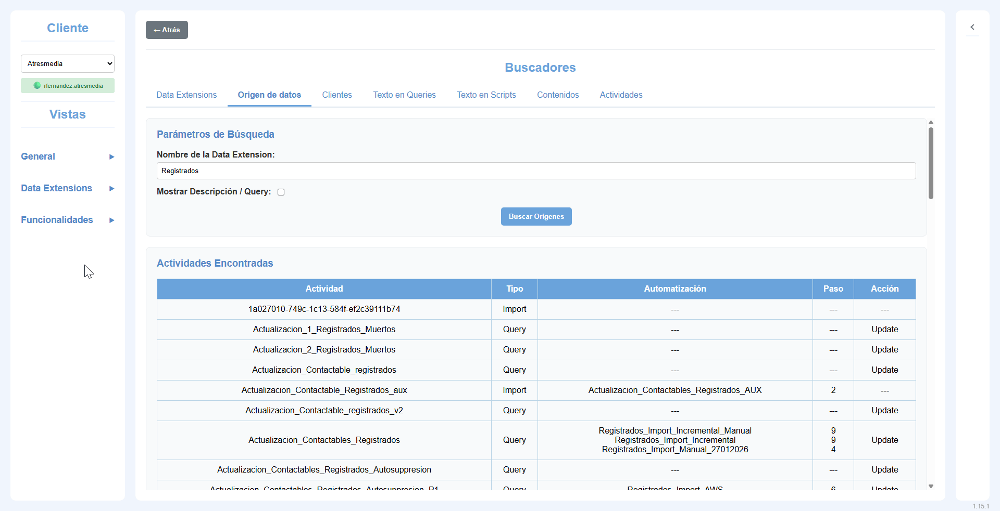
Panel de DEs Búsqueda de Clientes -
Descarga de logs
La aplicación dispone de un panel lateral derecho donde se van registrando todas las acciones y llamadas que realiza la app. Pulsa en los iconos < o > para mostrar u ocultar el panel.
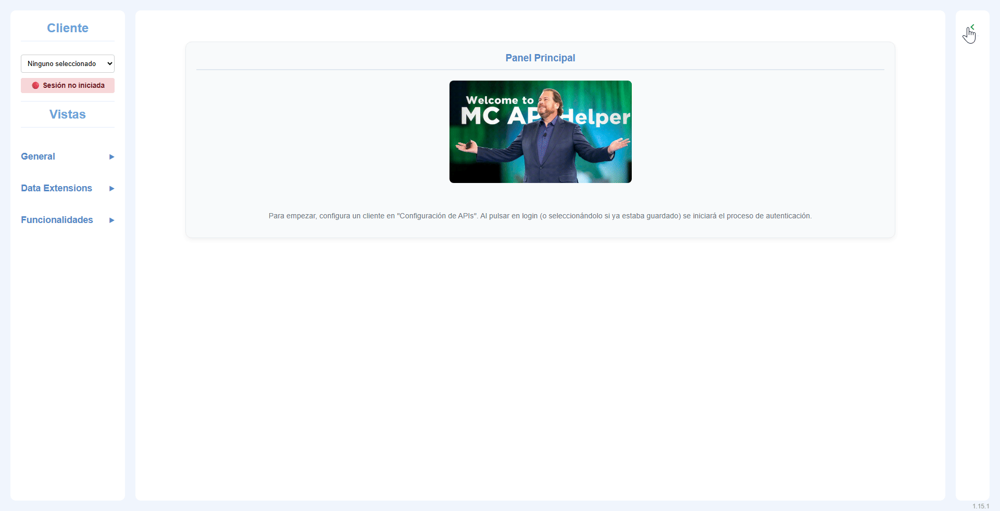
Mostrar/Ocultar panel de logPulsando en Log de Eventos se abrirá la ventana para descargar los logs con la fecha. Esto es útil por si os da algún error raro, para poder revisar que llamadas se han hecho
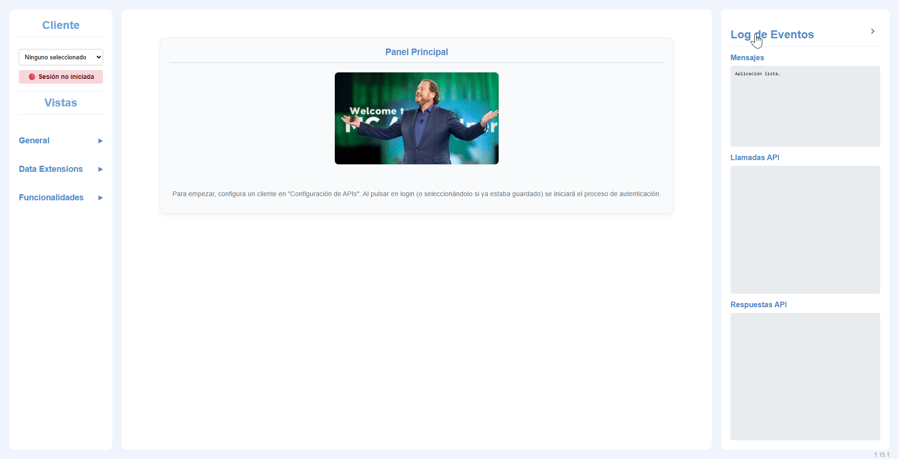
Descarga de logs -
Configuración de APIs > DEs Búsqueda de Clientes
Además de los pasos indicados en Primeros Pasos, dentro de la vista de Configuración de APIs está la pestaña DEs Búsqueda de Clientes.
Esta permite establecer una serie de Data Extension que permitirán tener una visión del cliente dentro de la vista Funcionalidades > Buscadores > Clientes Es útil cuando nos piden saber qué comunicaciones ha recibido un cliente, qué estado tiene en alguna tabla, logs, etc, sin necesidad de lanzar múltiples queries.
Para configurarlo, es necesario indicar:
- Nombre de la Data Extension donde buscar
- External Key de la Data Extension donde buscar
- Por qué campo se debe buscar al cliente (el que coincida con el id)
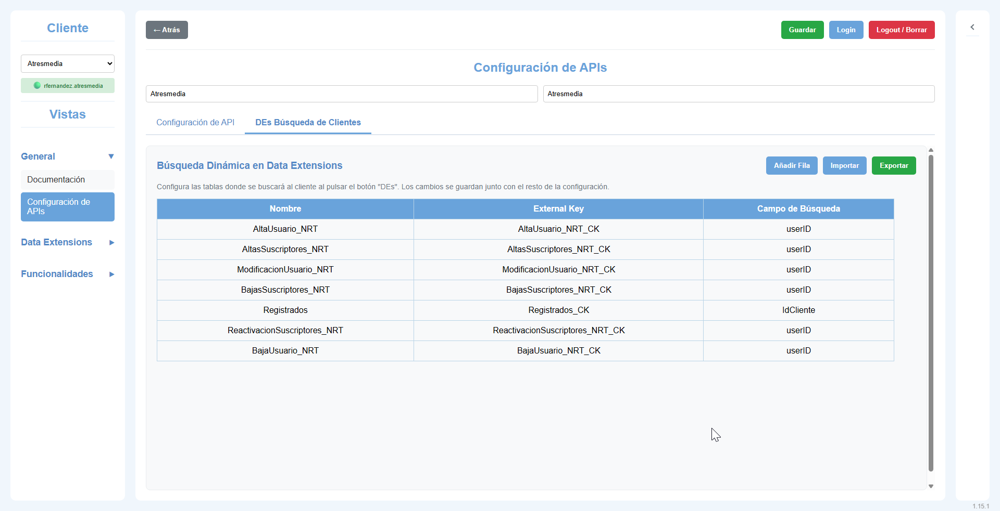
Panel de DEs Búsqueda de Clientes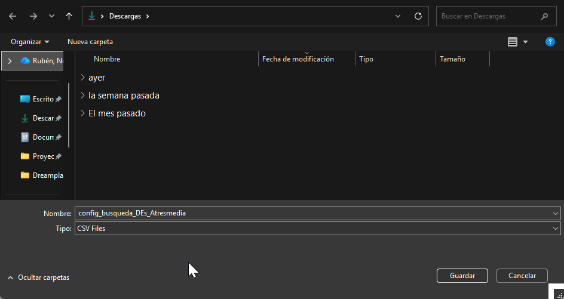
Exportación de fichero con nombre del clienteSi se ha configurado esta parte antes de darle al login, se guardarán las tablas automáticamente.
Si se añaden tablas posteriormente, es necesario darle al botón de guardar de la parte superior.
Una vez configuradas, se pueden exportar para que otra persona del equipo no tenga que configurarlas manualmente
Data Extensions
-
Creación de Data Extensions
Esta vista está ligada a la de Configuración de Campos y permite establecer la configuración de la Data Extension que se quiere crear.
Aquí se debe establecer el Nombre, Descripción (obligatorio) y si es "Sendable". Además, se puede realizar una búsqueda de carpetas para indicar dónde se debe guardar
Se puede indicar si es una Data Extension Sendable marcando la casilla correspondiente. Para ello, es necesario haber configurado los campos en Configuración de Campos ya que requiere seleccionar uno de ellos para establecer la relación con el suscriptor.
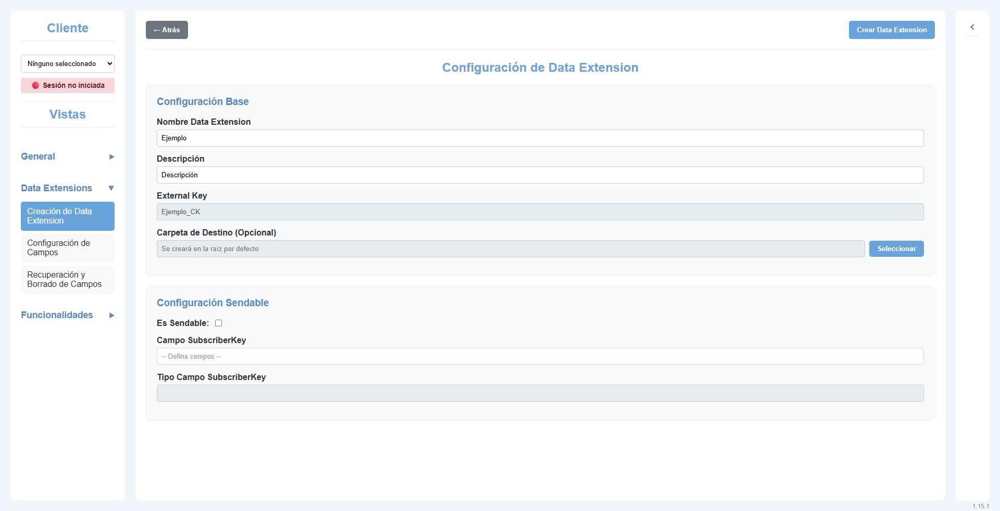
Panel de configuración Base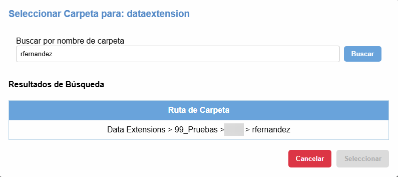
Selector de carpetas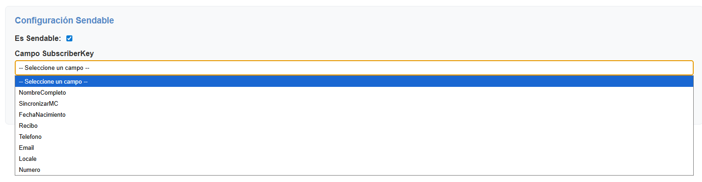
Panel de configuración SendablePara configurar los campos se debe ir a la vista Configuración de Campos.
En esta vista se puede:
- Importar un documento con los campos, por ejemplo cuando los copiamos del modelo de datos de Salesforce. Para ello solo se debe pegar el listado de campos e indicar el tipo de separador.
- Crear/Actualizar Campos, cuando se quieren añadir nuevos campos a una tabla existente o actualizar longitudes en campos
- Crear campos de ejemplo, para ver cómo se crea un campo de cada tipología
- Limpiar toda la tabla de campos. Esto siempre mantendrá una fila vacía
- Añadir filas a la tabla
- Eliminar filas. Para ello seleccionando una fila, aparecerá una x a la derecha de la fila para poder eliminarla
- Ordenar filas. Seleccionando una fila y usando las flechas, se puede ordenar la tabla. Esto es interesante sobre todo cuando queremos crear una copia de una tabla existente pero con un orden correcto, por ejemplo manteniendo los identificadores al principio. NO es posible ordenar campos sobre una Data Extension existente
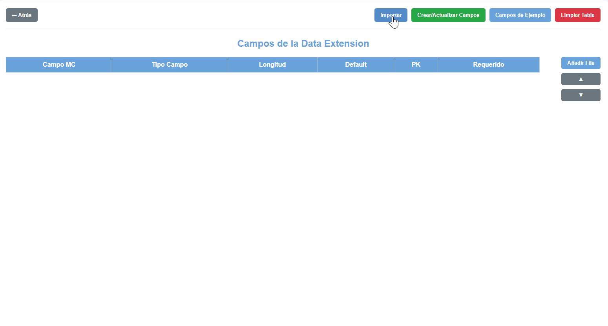
Importar campos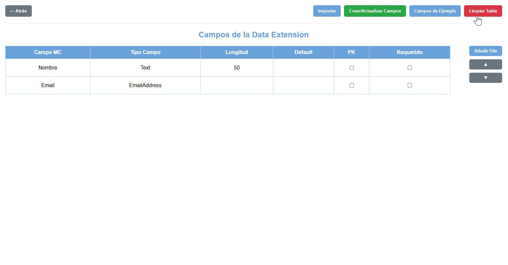
Gestionar campos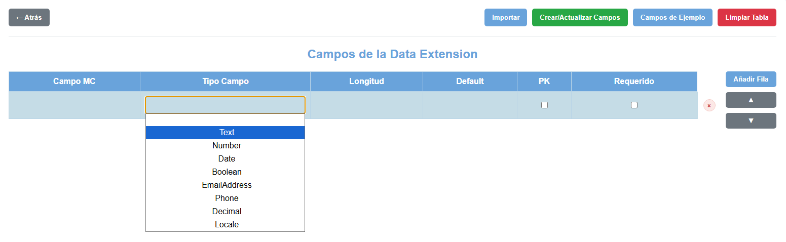
Selector de tipo de campoUna vez configurado, pulsando en Crear Data Extension se creará la Data Extension. Importante, no se limpia la configuración una vez creada por si se quieren seguir haciendo acciones sobre la misma o seguir creando Data Extensions parecidas
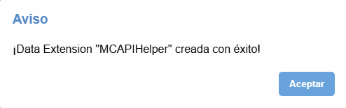
Creación Data Extension OK -
Recuperar y borrar campos de una Data Extension
Esta funcionalidad es útil para copiar una Data Extension o eliminar campos que no se pueden eliminar por pantalla
Indica la clave externa de la tabla y pulsa Recuperar Campos. Los campos recuperados aparecerán en la lista y en la pestaña de Configuración de Campos
Para borrar un campo, solo se debe seleccionar en la lista y pulsar en Borrar Campo
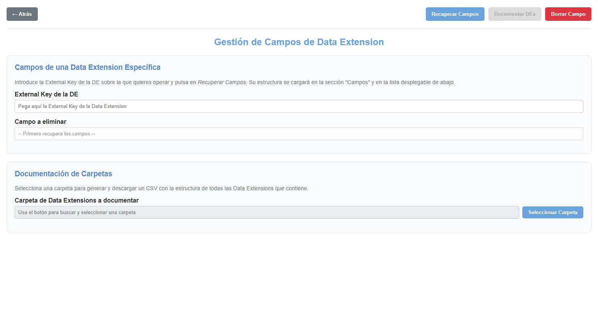
Recuperación de campos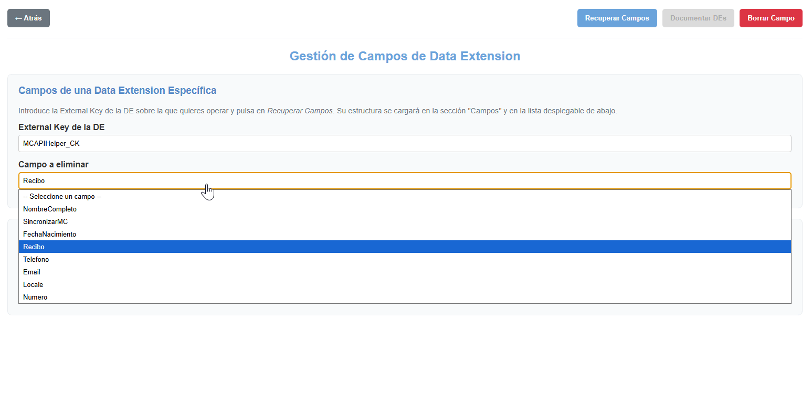
Borrado de campos -
Documentar Data Extensions
Esta funcionalidad permite generar un fichero CSV con la estructura completa de todas las DEs contenidas en una carpeta específica.
¿Para qué es útil? Por ejemplo cuando queremos tener identificados que campos de Salesforce estan integrados. Recuperando la carpeta de Sync DEs podemos documentarlo y luego compararlo con el modelo de datos de SF
Para documentar, selecciona la carpeta y pulsa en Documentar DEs
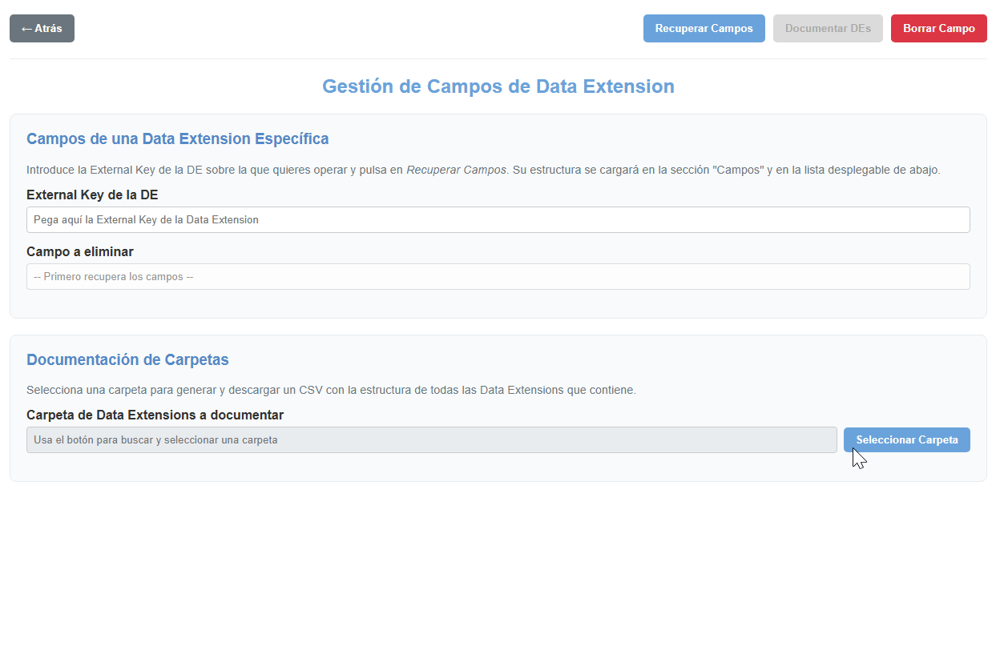
Documentar DEs
Buscadores
-
Buscador de Data Extensions
Este buscador permite buscar una Data Extension por su Nombre o External Key.
Devolverá todas aquellas Data Extension que contengan un nombre o external key similar.
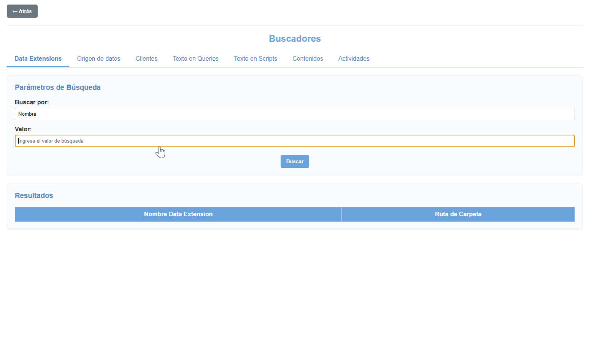
Buscar Data Extension -
Buscador de Origenes de datos
Este buscador permite buscar qué query o import inserta o actualiza datos en una Data Extension.
Devolverá todas las actividades de tipo query o import que apunten a la Data Extension. Se muestra además si se encuentra en algún automatismo y en qué paso del mismo.
El check de Mostrar Descripción / Query permite ocultar la última columna que muestra la propia query o descripción del import.
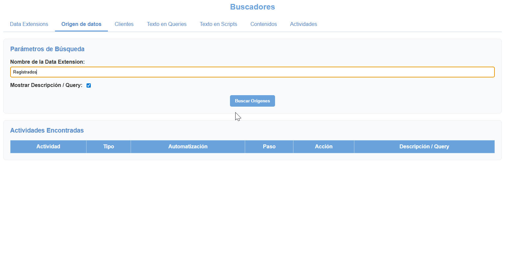
Buscar Origen de datos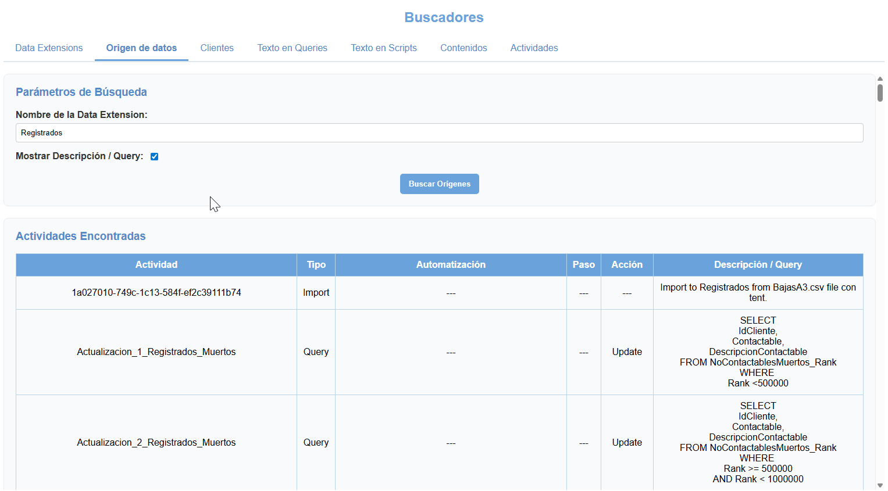
Mostrar u ocultar queries -
Buscador de Clientes
El buscador de Clientes pretende tener una forma rápida de buscar la información relacionada con un cliente de forma rápida, por ejemplo, cuando se pregunta qué comunicaciones ha recibido, tracking relacionado, si está en una data extension de exclusión, etc. Esto sin necesidad de tener que ir a cada tabla o lanzar queries por separado
Además permite buscar en qué Journeys se encuentra en ese momento y permite expulsarlos de estos de forma masiva. Es decir, se puede seleccionar más de un journey del que expulsarlo a la vez.
Para usar la funcionalidad de búsqueda en tablas es necesario haber configurado las tablas donde buscar en General > Configuración de APISs > DEs Búsquead de Clientes. Estas se podrán seleccionar para buscar y mostrará todo los campos de la misma, filtrado por el campom de búsqueda.
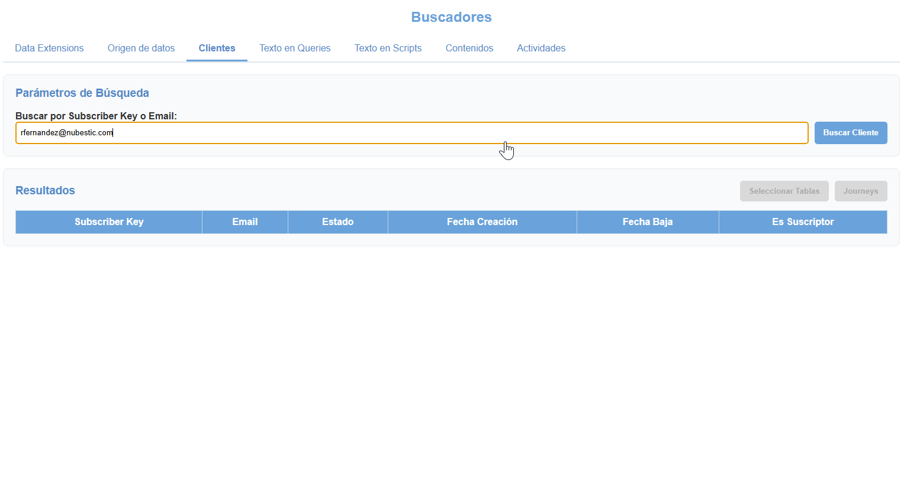
Buscar Cliente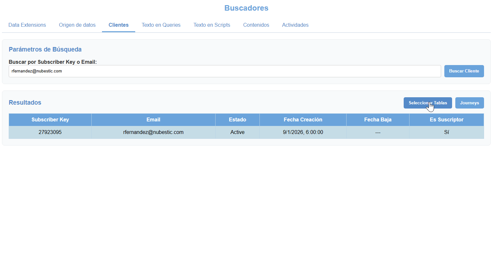
Buscar en Data Extensions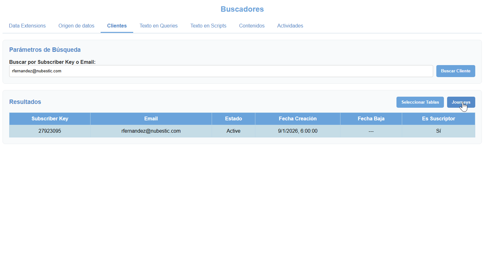
Buscar en Journeys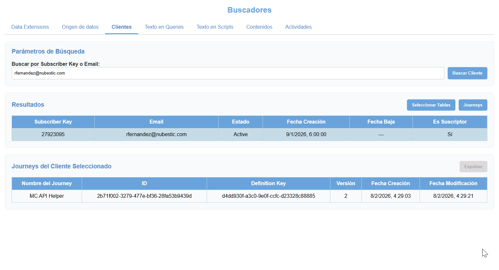
Expulsar de Journeys -
Buscador de Texto en Queries
Este buscador permite buscar cualquier cadena de texto en las queries. Si se encuentra alguna, mostrará qué query es (con el enlace a ella) y en qué automatismos y paso se encuentra
Además, mostrará la query, pudiendo mostrar y ocultar esta columna
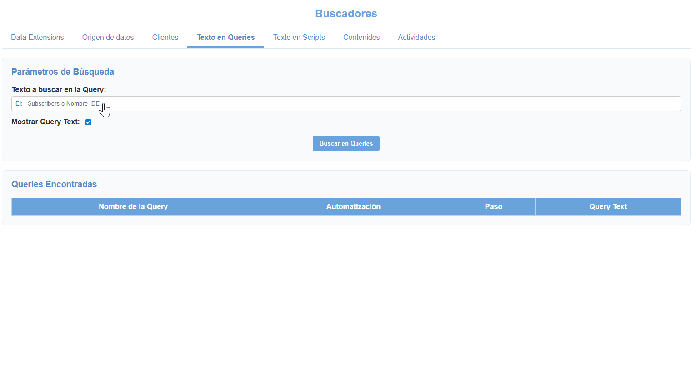
Buscar Queries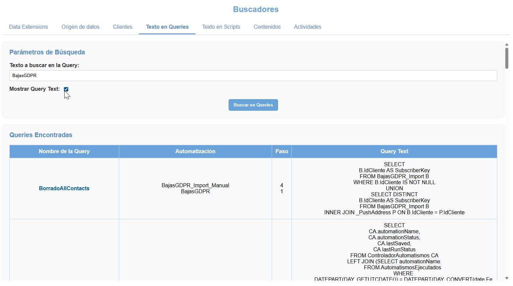
Mostrar/Ocultar Queries -
Buscador de Texto en Scripts
Este buscador permite buscar cualquier cadena de texto en los scripts. Si se encuentra alguno, mostrará qué script es (con el enlace a ella)
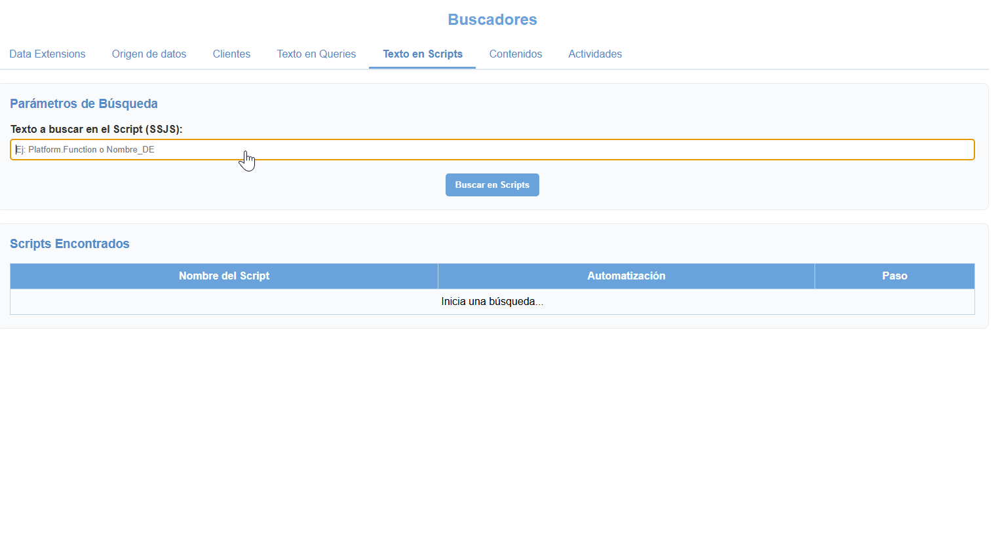
Buscar Scripts -
Buscador de Contenidos
Este buscador permite buscar cualquier contenido de content builder en base a su nombre o id. Mostrará todos los que tengan un mobre similar, la tipología y la ruta al contenido.
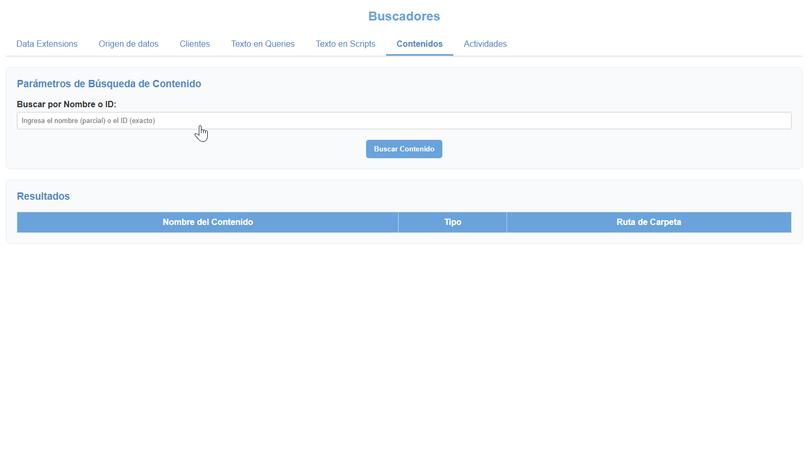
Buscar Contenidos -
Buscador de Actividades
Este buscador permite buscar cualquier actividad de la pestaña de actividades de Automation Studio.
Es util para saber si se está utilizando la actividad en un automatismo o en varios por si se modifica o eliminar para ver a qué puede afectar.
Permite buscar tanto por nombre como por clave externa, pero deben ser exactos.
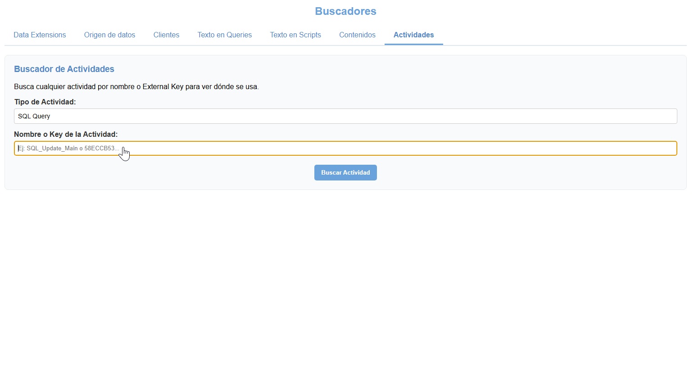
Buscar Queries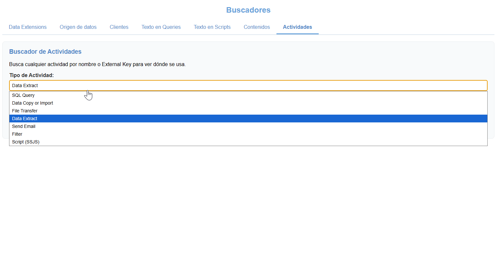
Buscar Scripts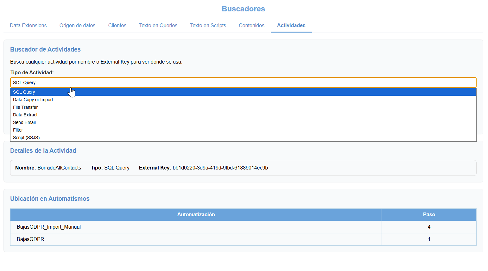
Buscar Extracts
Calendario
-
Calendario
Esta vista permite visualizar en un calendario todos los automatismos programados por la siguiente fecha de ejecución.
Es posible mostrar tanto todos los automatismos programados como aquellos que lanzan algun journey. En cualquier caso, si algún día tiene algo programado, el día estará marcado en azul.
Clicando en el día, se mostrará en el panel derecho qué automatismos son y la hora a la que están programados.
Pulsando en Automatizaciones del Día se acceder a la vista de Automatismos con los automatismos filtrados.
¡Importante! La próxima vez que se acceda, se mostrará lo que ya había guardado, por lo que es importante darle a Refrescar.
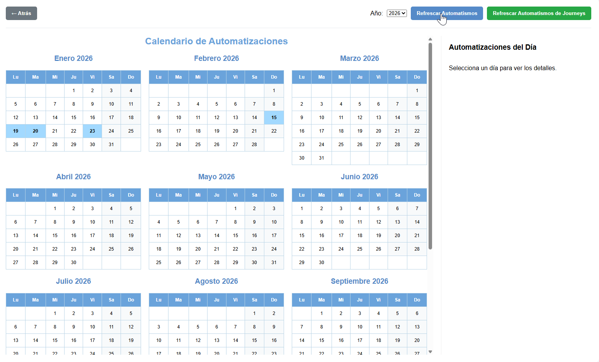
Automatismos programados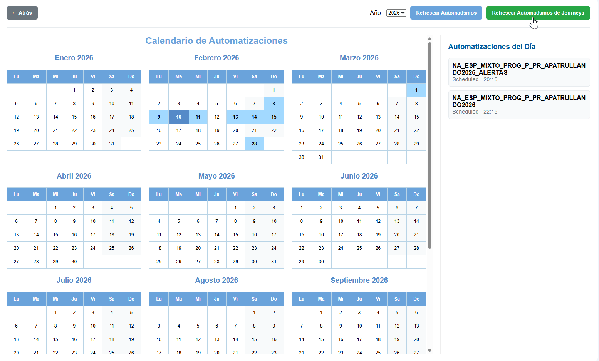
Automatismos que lanzan Journeys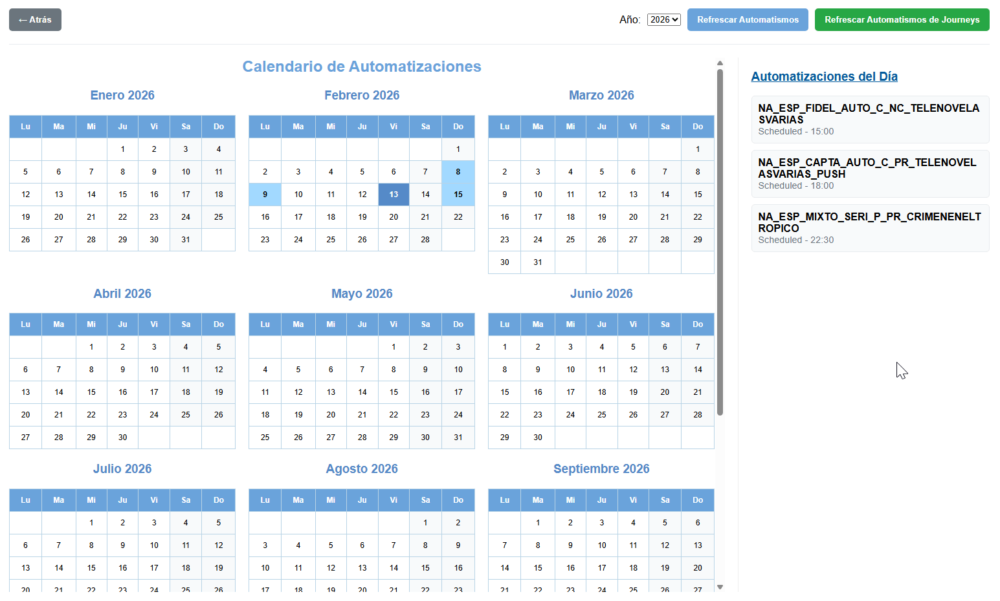
Acceder a vista filtrada de automatismos
Contenidos
-
Contenidos
Esta vista permite descargar todos los contenidos de la instancia para poder hacer búsquedas sobre ellos. En este caso Marketing Cloud no pone una forma fácil de obtenerlo así que es necesario hacer algun paso en el propio navegador para obtener lo contenidos.
Para importarlos, pulsa en el botón Importar que mostrará una ventana con las instrucciones a seguir. ¡Importante! Si al acceder al enlace que se indica en las instrucciones ves un UNAUTHORIZED, abre Content Builder y vuelve a intentarlo.
Una vez pegado el código, pulsa Enter y espera a que se termine de ejecutar. Cuando termine, copia lo que ha generado y pégalo donde indica la app. Puede que le cuesta copiarse porque el texto es enorme. De la misma forma, al pegarlo en la app tardará asi qué NO LE DES A PEGAR VARIAS VECES.
Una vez importados, los contenidos se guardarán asociados al cliente al que se está conectado, por lo que solo será necesario volver a importar si se quiere buscar en contenidos nuevos. El buscador filtrará los contenidos que contengan la cadena de texto. Aunque no se muestre, también busca en el cuerpo de los emails y se puede utilizar por ejemplo para saber qué mails utilizan una plantilla (buscando por el nombre de la misma).
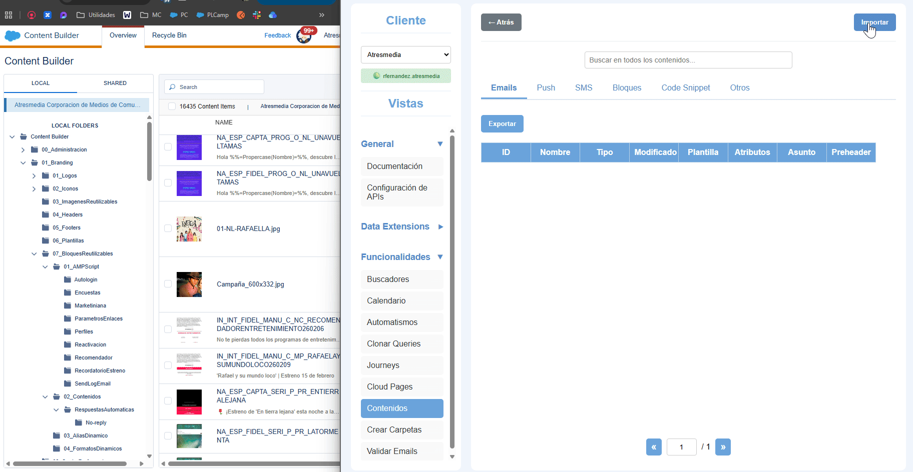
Recuperar contenidos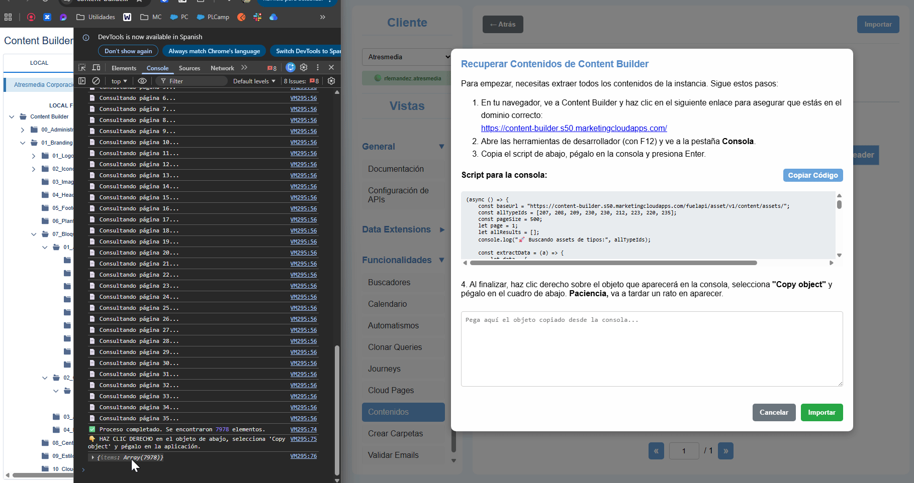
Pegar contenidos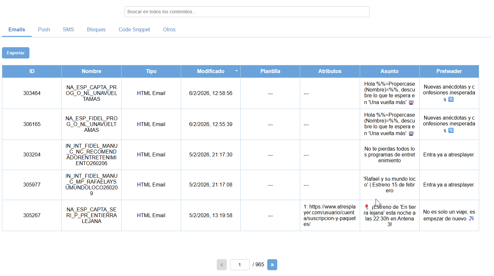
Buscar contenidosFinalmente, cada pestaña permite exportar los contenidos de la misma en formato excel. Se exportarán los contendiso filtrados si se ha utilizado el buscador.
Crear Carpetas
-
Crear Carpetas
Esta vista crear una estructura de carpetas de golpe para:
- Data Extensions
- Queries
- Journeys
- Automatismos
- Contenidos
- Scripts
Es útil en clientes con campañas repetitivas donde la estructura de carpetas bajo la campaña se compone de varias, de cara a no tener que crear una a una
Se debe indicar la carpeta principal bajo la que se crearán el resto. Con el nombre se lanzará el buscador de carpetas y se deberá seleccionar cual de todas las que pueden salir se quiere utilizar. Una vez hecho esto, se debe indicar el nombre de cada carpeta en líneas distintas y, si deben ser hijas separarlas con doble espacio o tabulador.
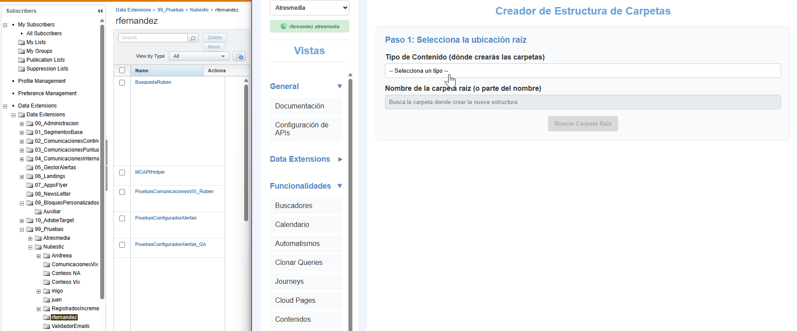
Crear carpetas de Data Extensions
Validar Emails
-
Validar Emails
Esta vista permite validar emails contra las opciones de validación que utiliza Marketing Cloud:
- SyntaxValidator
- MXValidator
- ListDetectiveValidator
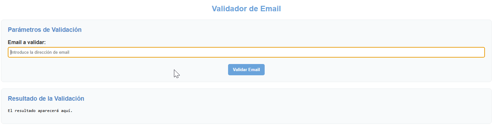
Válido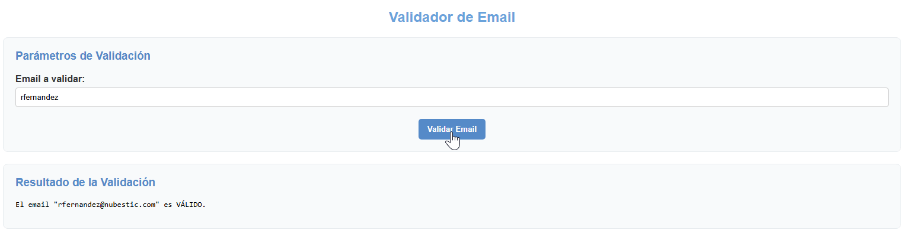
SyntaxValidator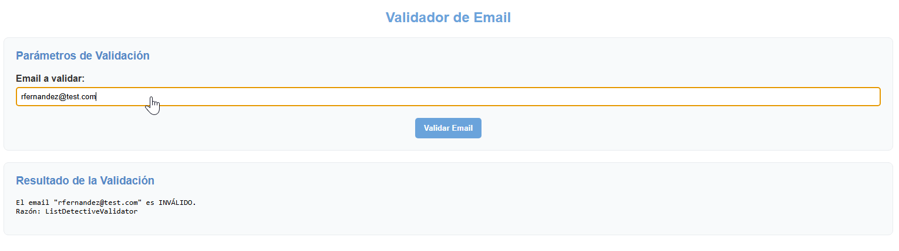
MXValidator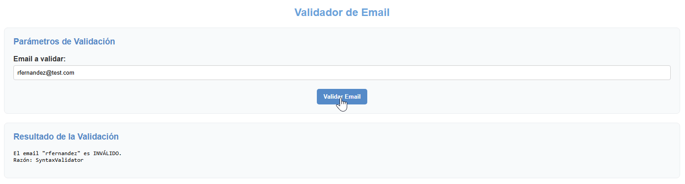
ListDetectiveValidator
-
Error de autenticación
Si cambias permisos en MC, es necesario desloguearse y volver a loguearse en la app para refrescar el token.
-
Carpetas no encontradas
Para crear o documentar DEs, usa siempre el buscador de carpetas para obtener el ID numérico correcto.
-
Upsert de campos
La acción "Actualizar campos" no borra nada; solo añade lo nuevo o modifica lo existente.
-
Decimales
En el campo longitud para decimales usa la coma:
18,2.
Validador de Email
Parámetros de Validación
Resultado de la Validación
El resultado aparecerá aquí.
Generador de Diagramas Entidad-Relación (ERD)
1. Abrir Contact Builder
Una vez abierto, haz clic en el siguiente enlace para abrir la ruta base en tu navegador. Debes tener una sesión activa de Marketing Cloud en el cliente seleccionado.
IR A LA API DE ATTRIBUTE GROUPS2. Ejecutar Script
Copia este código y pégalo en la consola (F12) del navegador en la página que acabas de abrir.
⚠️ Nota: Al ejecutar el script, se abrirá una ventana donde deberás seleccionar el Grupo de Atributos específico que quieres revisar.
Buscadores
Parámetros de Búsqueda
Resultados
| Nombre Data Extension | Ruta de Carpeta |
|---|
Parámetros de Búsqueda
Actividades Encontradas
| Actividad | Tipo | Automatización | Paso | Acción | Descripción / Query |
|---|
Parámetros de Búsqueda
Resultados
| Subscriber Key | Estado | Fecha Creación | Fecha Baja | Es Suscriptor |
|---|
Parámetros de Búsqueda
Queries Encontradas
| Nombre de la Query | Automatización | Paso | Query Text |
|---|
Parámetros de Búsqueda
Scripts Encontrados
| Nombre del Script | Automatización | Paso |
|---|---|---|
| Inicia una búsqueda... | ||
Parámetros de Búsqueda de Contenido
Resultados
| Nombre del Contenido | Tipo | Ruta de Carpeta |
|---|
Buscador de Actividades
Busca varias actividades por nombre o External Key (separadas por , ; o |).
Creador de Estructura de Carpetas
Paso 1: Selecciona la ubicación raíz
Gestión de Data Extensions
Configuración Base
Configuración Sendable
| Campo MC | Tipo Campo | Longitud | Default | PK | Requerido |
|---|
Campos de una Data Extension Específica
Introduce la External Key de la DE sobre la que quieres operar y pulsa en Recuperar Campos. Su estructura se cargará en la sección "Campos" y en la lista desplegable de abajo.
Documentación de Carpetas
Selecciona una carpeta para generar y descargar un CSV con la estructura de todas las Data Extensions que contiene.
Análisis de Journey:
Actividades del Journey
Gestión de Journeys
| Nombre Journey | Versión | Fecha creación | Fecha modificación | Fecha actividad | Tipo | Subtipo | Estado | Data Extension | DEs en Actividades | Emails | SMSs | Pushes | Whatsapps |
|---|
Clonador de Queries - Paso 1: Configuración
Carpetas de Origen y Destino
Gestión de Envíos
| Nombre / Key | Tipo | Sender Profile | Delivery Profile | Modificado |
|---|
| Nombre / Key | From Name | From Email | Auto-Reply | Forward To | Modificado |
|---|
1. Abrir SFMC
IR A DELIVERY PROFILES2. Ejecutar Script
Copia este código y pégalo en la consola (F12) de SFMC:
3. Pegar Resultado
| Nombre / Key | Descripción | Modo IP | IP Address | Header | Footer |
|---|
Gestión de Usuarios y Permisos
| Nombre (ID) | UserName | API User | Último Login | Estado | Roles |
|---|
1. Abrir SFMC
IR A ADMINISTRACIÓN DE USUARIOS2. Ejecutar Script
Copia este código y pégalo en la consola (F12) de SFMC: